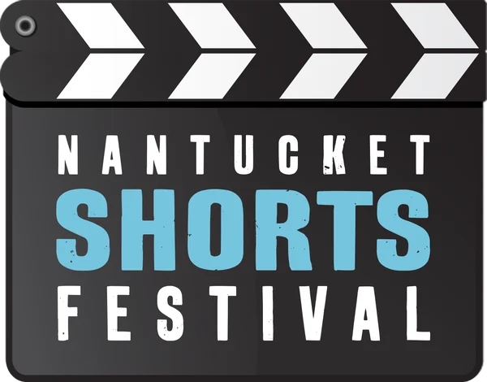

Short films inspired by Nantucket since 2013.
The Nantucket Shorts Festival celebrates short-form movies that are 2 to 10 minutes long, inspired by the island of Nantucket. Its unique format allows both experienced and amateur filmmakers to present their art on the big screen at the Dreamland Theater in an entertaining evening unlike any other. A jury screens each submitted film and selects the top films to appear at this festival.


Photos by Charity Grace Photography. For prints, click here.